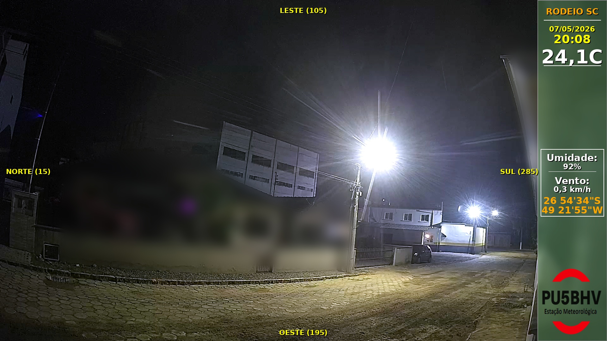

Monitoramento visual
Câmeras e timelapse
Área dedicada à foto mais recente da câmera e ao vídeo de timelapse gerado pelo sistema local no Raspberry.
Arquivo esperado
media/latest.jpg
O script do Raspberry pode copiar a imagem atual para esta pasta antes do envio ao GitHub.
Monitoramento visual
Foto e vídeo atualizados pelo Raspberry antes da publicação.
Última foto
Recarrega a cada 5s
Captura estática mais recente da câmera, com parâmetro de horário para evitar cache do navegador.
Vídeo recente
TimelapseTimelapse mais recente gerado pelo sistema, reunindo a sequência visual registrada pela câmera.
Como funciona
O Raspberry gera ou copia os arquivos de mídia e depois envia a pasta do site para o repositório rodeiosc.github.io.
Cache
A página adiciona um timestamp ao recarregar a imagem para evitar que o navegador mostre uma versão antiga.
Uso
Ideal para acompanhamento visual contínuo em desktop e celular, sem depender de PHP no servidor.